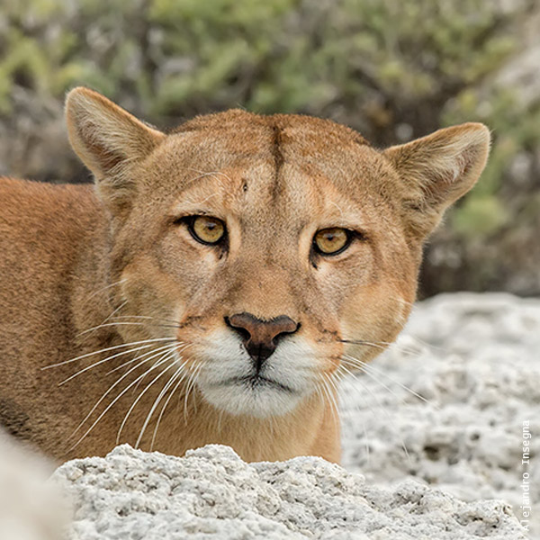

Puma
- Nombre científico: Puma concolor
- El Puma mide entre 85 a 150 cm de largo
- Su peso va desde los 34 a 105 kg
Por lo general el Puma es solitario y de hábitos preferentemente crepusculares y nocturnos, con picos de actividad al anochecer y al amanecer; pasa la mayor parte del día descansando en oquedades rocosas, encaramado en las ramas de los árboles, o escondido entre pastos altos. De movimientos rápidos y silenciosos, es un corredor veloz, muy poderoso en el salto y un hábil nadador; trepa a los árboles con agilidad, pudiendo subir o bajar de ellos con un solo salto de más de 10 metros. No puede rugir y al igual que los gatos domésticos vocalizan silbidos agudos, gruñidos y ronroneos. Su territorio varía entre 56 y 375 km2, de acuerdo a la disponibilidad de presas. El territorio del macho es mayor y generalmente se superpone con el área de acción de varias hembras. Dicho territorio es marcado por pequeñas pilas de hojas y cortezas que arranca y apila cuando se afila las garras, a los que suele rociar con orina y excrementos.
Presenta una forma esbelta, cabeza ancha, con orejas redondeadas y cola larga, del mismo grosor en toda su longitud. En el adulto el pelaje es suave, corto y de color uniforme, mientras que en las crías presenta un moteado muy oscuro durante los 3 o 4 primeros meses de vida que va perdiéndose con la madurez. El color varía desde leonado rojizo hasta grisáceo o pardo oscuro, siendo más intenso en la frente y en la línea media del dorso. El vientre, el mentón, el extremo anterior del hocico y en interior de las orejas son muy pálidos, casi blancos, mientras que los costados del hocico y la punta de la cola son negros.